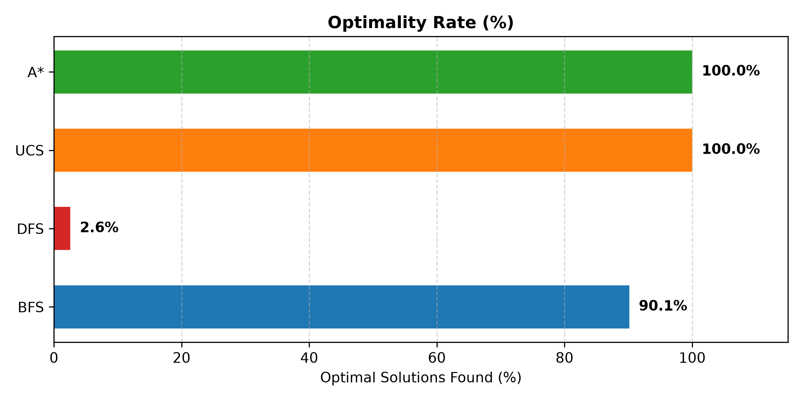
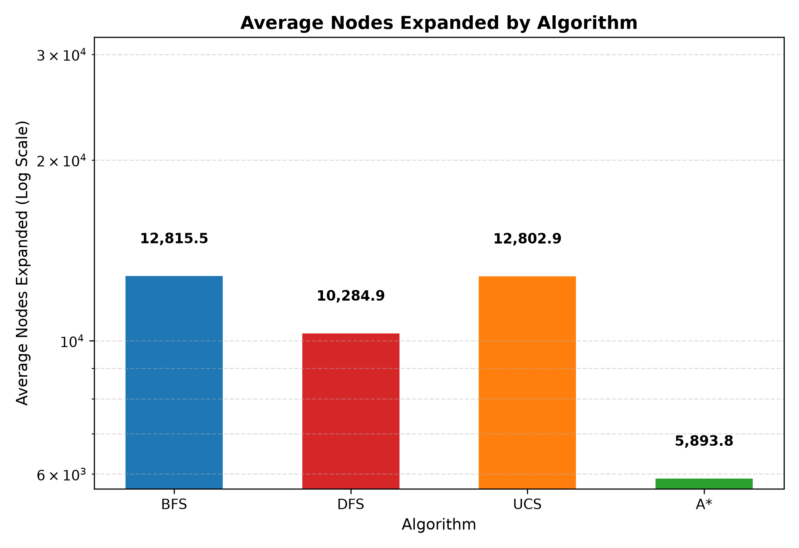
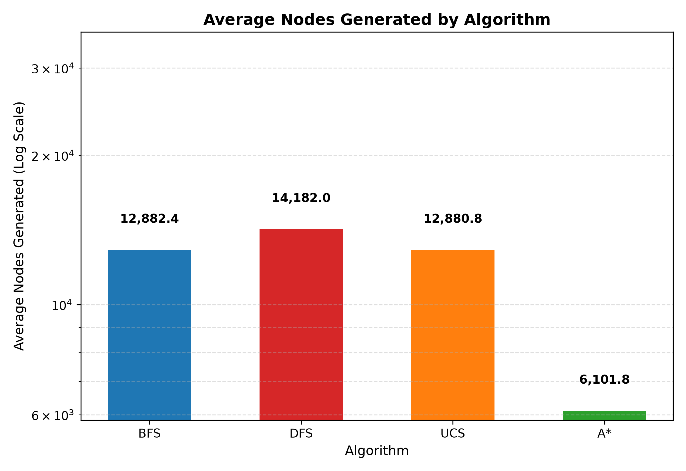
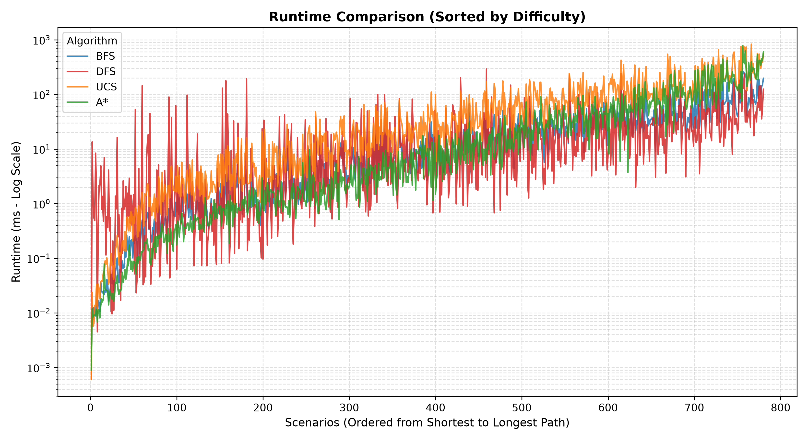
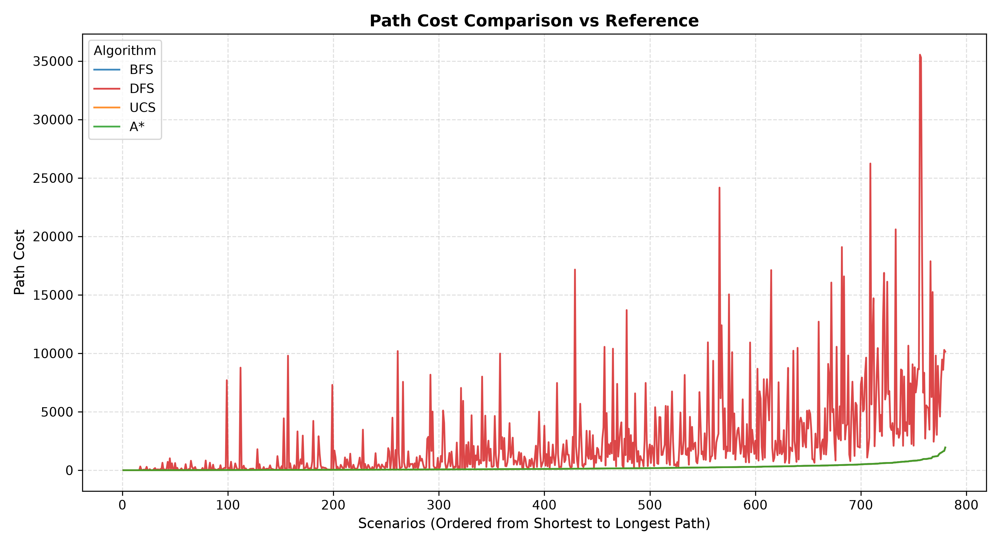
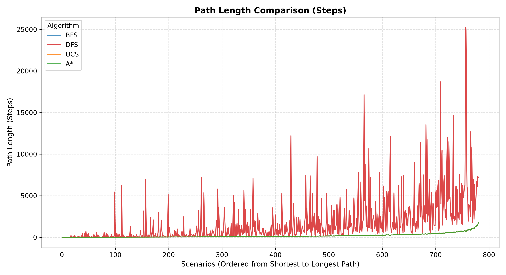

Problem Statement and Motivation
Finding a path from a starting point to a goal on a grid map is a core problem in artificial intelligence, robotics, and video games. When a map has walls and allows movement in eight directions, a good pathfinding algorithm needs to find the shortest route without wasting time or memory checking unnecessary tiles.
In this project, we built and tested four classic search algorithms
from scratch: Breadth-First Search (BFS),
Depth-First Search (DFS),
Uniform-Cost Search (UCS), and
A* Search. We ran them on 156 game maps from
Dragon Age: Origins to see how well each method performs when
straight steps cost 1.0 and diagonal steps cost
√2 ≈ 1.4142.
Dataset Description
- Source: Moving AI Pathfinding Benchmarks, using the Dragon Age: Origins (DAO) map collection
-
Dataset Size: 156 grid map files
(
.map) paired with 156 scenario files (.scen) containing thousands of pathfinding tasks across indoor rooms, narrow hallways, and open areas. -
What Each File Contains: Each
.mapfile gives the grid width, height, and layout of walkable floors and blocked walls. Each.scenfile lists a starting coordinate, a goal coordinate, and the true shortest path cost for comparison. -
Data Cleaning and Split: We removed any invalid
tasks where the start or goal tile was blocked by a wall. For each
map, we split the valid tasks into an
80% development set and a
20% test set using
RANDOM_SEED = 10.
Methods
We coded all four search algorithms in pure Python using built-in data structures. Each algorithm tracks how many tiles it checks, builds the final path back to the start, and adds up the exact movement cost.
Breadth-First Search (BFS)
Uses a standard queue to check tiles layer by layer. It finds the path with the fewest steps, ignoring the extra cost of diagonal moves.
Depth-First Search (DFS)
Uses a stack to follow one branch as deep as possible before turning back. It explores quickly in one direction but does not try to find the shortest path.
Uniform-Cost Search (UCS)
Uses a priority queue (heapq) to always expand the
tile with the lowest total distance traveled so far,
g(n). This guarantees the lowest-cost path.
A* Search
Uses a priority queue ordered by f(n) = g(n) + h(n),
combining the distance traveled so far with an
octile distance estimate h(n) toward
the goal.
h(n) = max(|xn − xgoal|, |yn − ygoal|) + (√2 − 1) · min(|xn − xgoal|, |yn − ygoal|)
Experimental Setup
-
Test Sample: We picked up to 5 test tasks from each
of the 156 maps using
RANDOM_SEED = 10, giving 780 total test queries evaluated across all four algorithms. -
Movement Rules: Agents can move in 8 directions (4
straight and 4 diagonal). Straight moves cost
1.0and diagonal moves cost√2. Agents cannot cut diagonally past the corner of a wall. -
Metrics Measured:
- Success Rate (%): How often the algorithm successfully found a path to the goal.
-
Optimality Rate (%): How often the path cost
matched the true shortest cost (within
TOLERANCE = 0.0001). - Nodes Expanded and Generated: How many map tiles the algorithm visited and added to its search list.
- Path Length and Path Cost: Total number of steps taken and the total weighted cost of those steps.
-
Runtime (ms): The median time taken across
3 repeated runs per task, measured with
time.perf_counter().
Results
The table below shows the average results across all 780 test queries on the 156 maps. Every algorithm found a valid path 100% of the time, but they differed greatly in path quality, tiles checked, and speed.
| Algorithm | Solved | Success (%) | Avg. Expanded | Avg. Generated | Avg. Path Length | Avg. Path Cost | Optimal (%) | Avg. Runtime (ms) |
|---|---|---|---|---|---|---|---|---|
| BFS | 780 / 780 | 100.00% | 12,815.46 | 12,882.39 | 182.12 | 204.47 | 90.13% | 24.87 |
| DFS | 780 / 780 | 100.00% | 10,284.86 | 14,181.99 | 1,737.21 | 2,441.10 | 2.56% | 22.18 |
| UCS | 780 / 780 | 100.00% | 12,802.89 | 12,880.84 | 182.27 | 204.18 | 100.00% | 74.99 |
| A* | 780 / 780 | 100.00% | 5,893.80 | 6,101.84 | 182.27 | 204.18 | 100.00% | 42.33 |
Performance Visualizations
These charts compare how each algorithm performs as paths get longer
and harder across the results/ outputs.






Discussion
-
A* vs. UCS (Same Best Path, Much Less Work): Both
A* and UCS found the exact shortest path
100% of the time (average cost of
204.18) because both carefully track real movement costs. However, UCS searches blindly in all directions like a spreading circle. A* uses its distance estimate to aim directly toward the goal, which lets it check 54% fewer tiles (5,893.80vs.12,802.89) and finish 43.6% faster (42.33 msvs.74.99 ms). -
Why BFS Missed Almost 10% of Optimal Paths: BFS was
fast (
24.87 ms) and found paths with the fewest individual steps (182.12steps). However, BFS treats every step as equal cost, forgetting that diagonal steps (1.414) are longer than straight steps (1.0). Because of this, it sometimes picks a route with fewer diagonal steps that actually covers a longer distance, dropping its optimality to 90.13%. -
Why DFS Produced Very Long Paths: DFS had the
fastest average time (
22.18 ms) only because its stack operations are very simple and it occasionally stumbled onto the goal early in open rooms. In most maps, however, DFS wandered deep into dead ends and took huge detours, creating paths averaging 1,737 steps (nearly 12 times worse than optimal) and succeeding at finding the best path only 2.56% of the time. -
Limitations and Future Improvements: Even though A*
checked less than half as many tiles as BFS, BFS still ran slightly
faster in milliseconds because Python priority queues
(
heapq) take extra time to sort items compared to simple lists. In the future, we could speed up A* by using Jump Point Search (JPS) to skip empty open spaces or running Bidirectional A* from both the start and goal at the same time.
Conclusion
Across 780 test cases on 156 Dragon Age: Origins maps, A* Search is clearly the best overall choice for 2D grid pathfinding. It guarantees the shortest path 100% of the time while checking far fewer map tiles than UCS and BFS. BFS is a fast backup when slightly longer paths are acceptable, while DFS is not suitable when path quality matters.
References & AI Assistance Disclosure
- Sturtevant, N. R. (2012). Benchmarks for grid-based pathfinding. IEEE Transactions on Computational Intelligence and AI in Games, 4(2), 144-148. https://movingai.com/benchmarks/dao/
- Hart, P. E., Nilsson, N. J., & Raphael, B. (1968). A formal basis for the heuristic determination of minimum cost paths. IEEE Transactions on Systems Science and Cybernetics, 4(2), 100-107. https://doi.org/10.1109/TSSC.1968.300136
- Witmer, N. (2013, May 5). A visual explanation of Jump Point Search. Zerowidth. https://zerowidth.com/2013/a-visual-explanation-of-jump-point-search/
- ScienceOpen. (n.d.). Bidirectional A* search. https://www.scienceopen.com/document?vid=01e7ea4c-0956-4041-bb5c-8787ec6bed24
-
Disclosure on the Use of AI: ChatGPT and Gemini
were used to help organize the repository documentation
(
README.md) and format the HTML/CSS for this project webpage. All pathfinding algorithms, experiments, and result analyses were written and verified by Group 6.